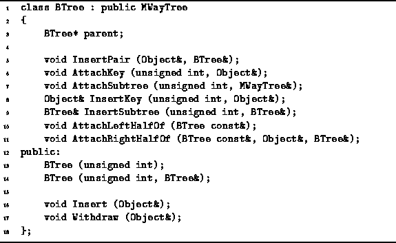

Data Structures and Algorithms
with Object-Oriented Design Patterns in C++
Data Structures and Algorithms
with Object-Oriented Design Patterns in C++
Having already implemented the M-way search tree class, MWayTree,
we can make use of much the existing code to implement a B-tree class.
Program  gives the declaration of the BTree class
which is derived from the class MWayTree.
With the exception of the two functions which modify the tree,
Insert and Withdraw,
the AVLTree class inherits all its
public functionality from the M-way tree class.
Of course, the Insert and Withdraw member functions
need to be redefined in order to ensure that every time tree is modified
the tree which results is a B-tree.
gives the declaration of the BTree class
which is derived from the class MWayTree.
With the exception of the two functions which modify the tree,
Insert and Withdraw,
the AVLTree class inherits all its
public functionality from the M-way tree class.
Of course, the Insert and Withdraw member functions
need to be redefined in order to ensure that every time tree is modified
the tree which results is a B-tree.

Program: BTree Class Definition
 Copyright © 1997 by Bruno R. Preiss, P.Eng. All rights reserved.
Copyright © 1997 by Bruno R. Preiss, P.Eng. All rights reserved.